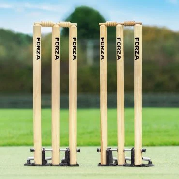
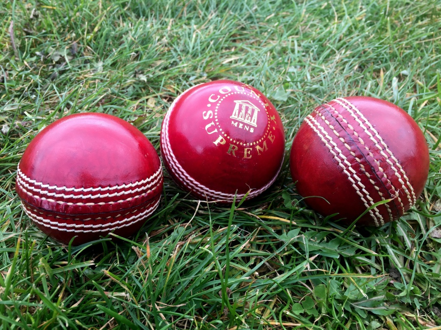
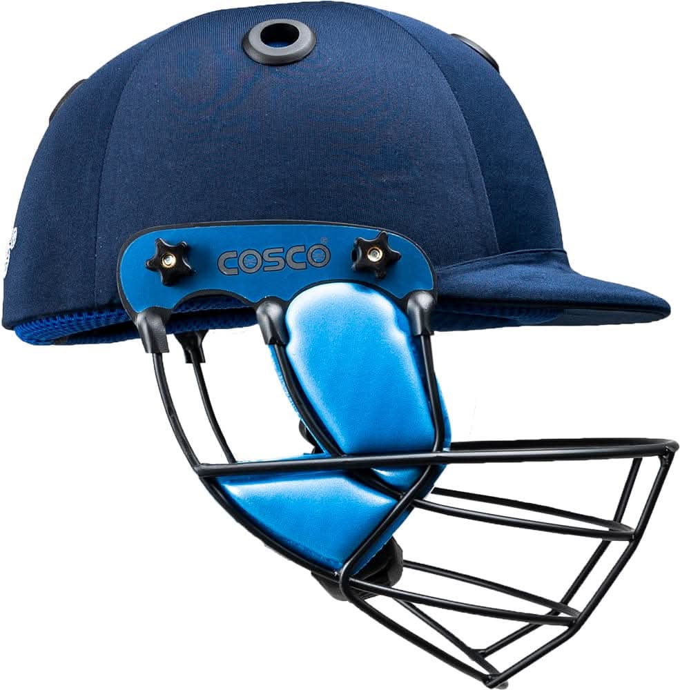

O que é o cricket ?
é um esporte coletivo de taco e bola jogado entre duas equipes de 11 jogadores cada,
realizado em um campo oval com uma faixa retangular central chamada de pitch.
É considerado o segundo esporte mais popular do mundo em número de espectadores.
Como funciona uma partida ?
Objetivo: A equipe que rebate (batsmen) tenta marcar o maior número possível de pontos,
chamados de corridas (runs),
enquanto a equipe adversária tenta eliminar 10 dos 11 rebatedores e conter a pontuação.
Dinâmica: As equipes se revezam nos papéis de ataque (rebatida e corrida) e defesa (lançamento e campo).
O Pitch e os Wickets: No centro do campo, em cada extremidade do pitch
(que tem cerca de 20 metros), fica o wicket
— um conjunto de três estacas de madeira com pequenas peças no topo chamadas bails.
O arremessador (bowler) lança a bola tentando atingir o wicket adversário,
e o rebatedor a defende com o taco
Pontuações
- Os rebatedores marcam pontos correndo de uma ponta a outra do pitch enquanto a defesa busca a bola.
- Se a bola bater no chão e sair dos limites do campo, valem 4 pontos.
- Se a bola sair dos limites pelo ar (sem tocar no chão), valem 6 pontos.
- Um rebatedor pode ser eliminado (out) se tiver seu wicket derrubado pela bola, se um defensor pegar a bola no ar antes que ela caia (caught), ou se a defesa atingir o wicket antes de ele completar a corrida (run out).
Origem e Popularidade
Surgiu no sudeste da Inglaterra entre os séculos XVI e XVII,
popularizando-se inicialmente entre a nobreza e depois se expandindo pelo Império Britânico.
É uma verdadeira febre em países da Comunidade Britânica, com destaque para a Índia,
Paquistão, Austrália, Inglaterra, África do Sul e Bangladesh.
No Brasil, foi introduzido por volta de 1872 por imigrantes ingleses,
sendo organizado hoje pela Confederação Brasileira de Cricket.
Origem em Poços de Caldas
O cricket em Poços de Caldas começou em 14 de agosto de 2012 na Associação Atlética Caldense,
sob a liderança do inglês Matt Featherstone (técnico da Seleção Brasileira),
transformando a cidade na capital nacional do esporte.
O esporte foi introduzido no clube pioneiramente para associados e familiares.
O cricket está integrado ao currículo de dezenas de escolas públicas locais,
atendendo a mais de 5.700 crianças e adolescentes.
Nova Sede Nacional (Abril de 2026): Inauguração da sede administrativa da Confederação
Brasileira de Cricket no histórico Casarão do Country Club.
Grandes públicos
Maior público em uma única partida de formato rápido (T20)
Público: 101.566 pessoas
Partida: Gujarat Titans vs Rajasthan Royals (Final da IPL de 2022)
Estádio: Estádio Narendra Modi (Ahmedabad, Índia)
reconhecido pelo Guinness World Records como o maior público oficial de um jogo de formato T20
Maior público acumulado em uma partida tradicional
Público: 465.000 pessoas (estimado ao longo dos 5 dias de jogo)
Partida: Índia vs Paquistão (fevereiro de 1999)
Estádio: Eden Gardens (Calcutá, Índia).
Nos anos 90, o estádio não tinha assentos individuais bem delimitados,
permitindo picos diários de mais de 100.000 torcedores antes de suas reformas
Maior público em um único dia de Test Match
Público: 94.199 pessoas
Partida: Austrália vs Inglaterra (Dia 1 do Boxing Day Ashes Test, 26 de dezembro de 2025)
Estádio: Melbourne Cricket Ground (MCG) (Melbourne, Austrália).
O icônico MCG estabeleceu esse recorde histórico na tradicional série The Ashes,
superando o recorde diário anterior de 2013 (91.112) e a final da Copa do Mundo de 2015 (93.013).
Cricket
Descubra alguns equipamentos do Cricket

Bastão de Cricket

Whicket e Bails

Bola de Cricket

Capacete de Cricket
Curiosidades sobre o cricket
- A partida mais longa da história durou 12 dias. Em 1939, a Inglaterra e a África do Sul jogaram o que ficou conhecido como o "Test Match sem limites" (Timeless Test). A partida durou 12 dias e, incrivelmente, terminou em um empate técnico porque o navio que levaria a equipe inglesa de volta para casa estava prestes a partir.
- Hoje em dia, o termo hat-trick é usado no futebol quando um jogador marca três gols. Porém, a expressão nasceu no críquete em 1858: quando o jogador HH Stephenson eliminou três batedores em três bolas seguidas, os torcedores fizeram uma vaquinha e compraram um chapéu (hat) novo para ele como prêmio pelo feito (trick).
- Diferente da maioria dos esportes, onde o investimento começa pelo masculino, o Brasil foi o primeiro país do mundo a dar contratos profissionais para a sua seleção feminina de críquete antes da masculina. As Yasmin's (como é conhecida a seleção brasileira feminina) são uma potência na América do Sul.
- No cricket, quando um batedor é eliminado sem conseguir marcar nenhum ponto (run), diz-se que ele foi eliminado por um "Duck" (Pato). O termo é uma abreviação de "duck's egg" (ovo de pato), usado porque o número zero se parece visualmente com um ovo.
Explore o Mundo dos Esportes!
Navegue pelas páginas e descubra mais sobre
as modalidades que movimentam o mundo.
Voltar ao início
↑ Voltar ao topo